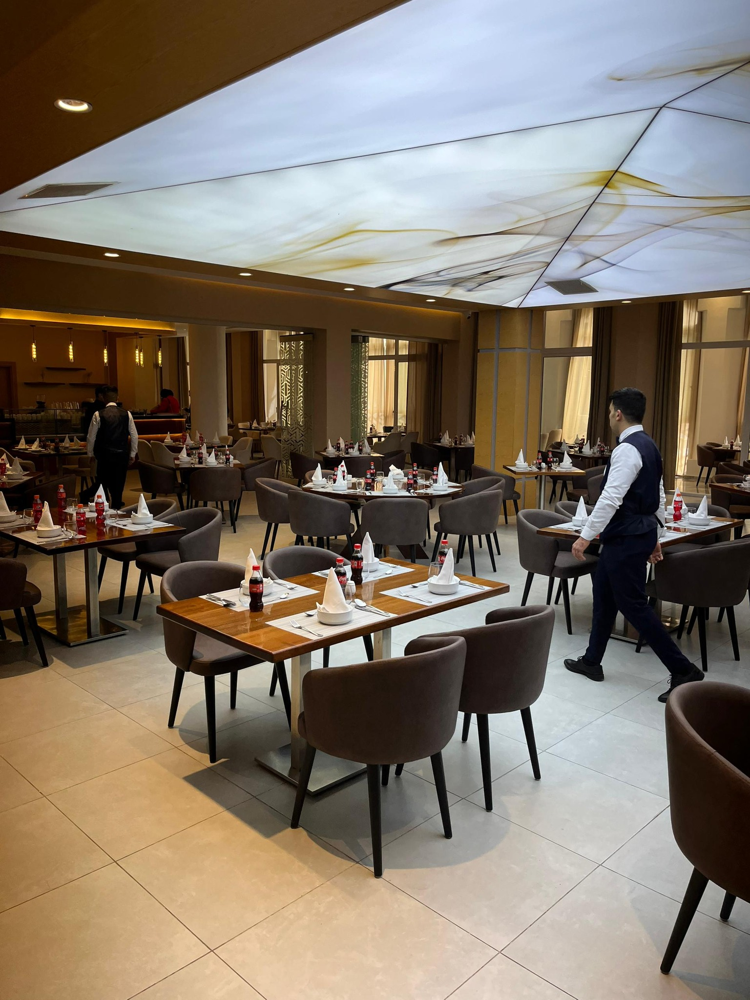
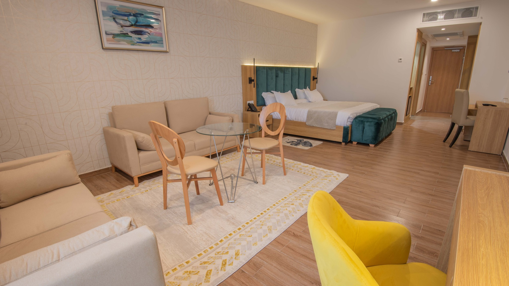

HOTEL MERMOURA GUELMA
Vivez une expérience d'exception
de vous présenter ses atouts, plongeons dans son histoire : Si vous recherchez un hôtel alliant confort, modernité et sérénité en plein cœur de Guelma, l’Hôtel du Mermoura est l’adresse idéale. Nommé d’après le site historique du Mermoura, cet hôtel est une véritable œuvre architecturale. L’Hôtel du Mermoura est un symbole de l'élégance et du raffinement algérien. Conçu pour offrir une expérience inoubliable aux voyageurs d’affaires et de loisirs, il reflète l’âme de la ville et de ses traditions. Depuis sa création, il a été régulièrement modernisé, afin de répondre aux attentes des clients les plus exigeants. L’hôtel se trouve au cœur de la ville de Guelma, à quelques minutes des principaux centres d’intérêt : le théâtre romain, les bains antiques, les mosquées historiques, ainsi que le marché traditionnel. Découvrez les atouts de l'Hôtel du Mermoura : Cet établissement moderne vous offre un service de qualité dans un cadre exceptionnel. L’hôtel dispose de 76 chambres. Toutes les chambres sont équipées d’une salle de bain privée, télévision à écran plat, téléphone direct, coffre-fort, et connexion Wi-Fi gratuite. L’hôtel propose plusieurs restaurants, dont un restaurant gastronomique offrant une cuisine raffinée, ainsi qu’un restaurant traditionnel algérien. Vous trouverez également un café et un bar pour vos moments de détente. L’établissement comprend également une salle de conférence moderne, une salle de réunion adaptées à tous vos besoins, une salle des fêtes, un centre de fitness, un spa, une piscine extérieure et un parking sécurisé. Que ce soit pour un séjour d’affaires, de détente ou pour découvrir la ville de Guelma, l’Hôtel du Mermoura vous garantit une expérience unique.
 